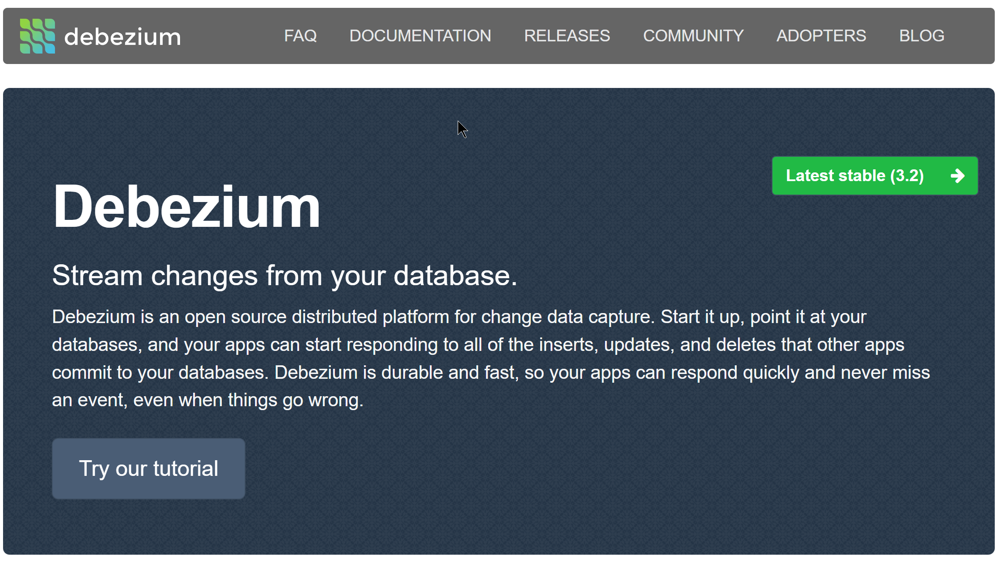
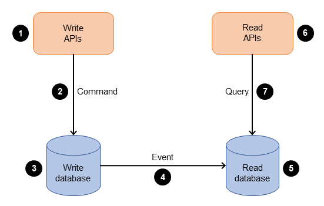
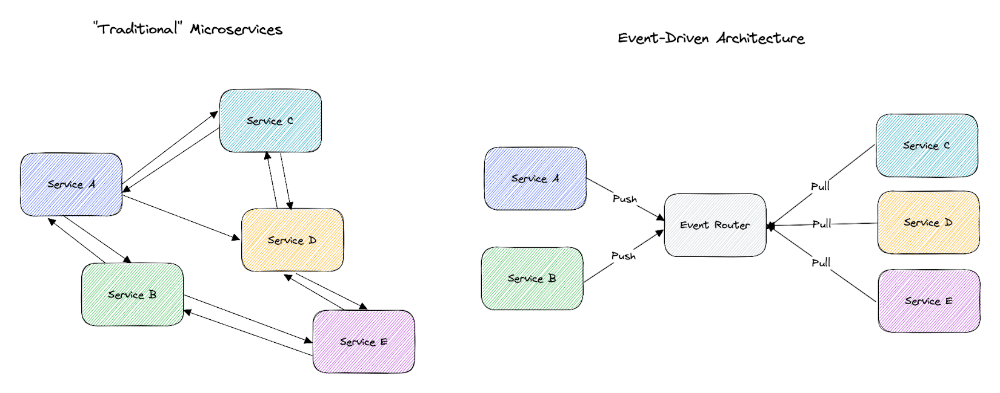
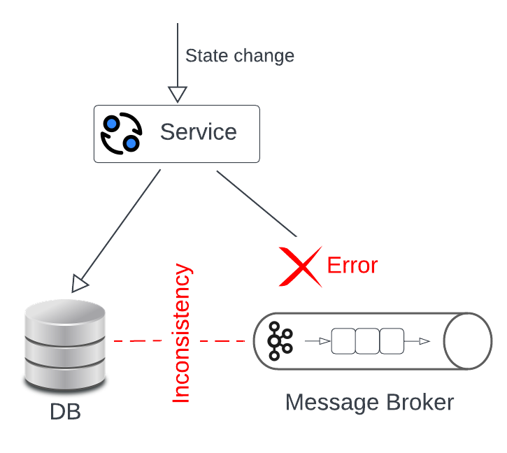
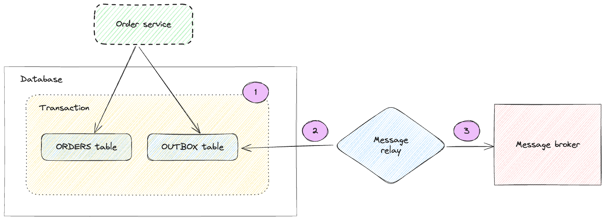
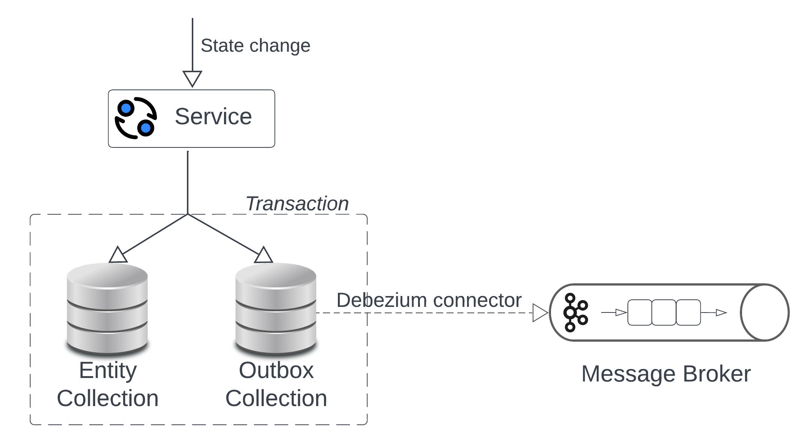
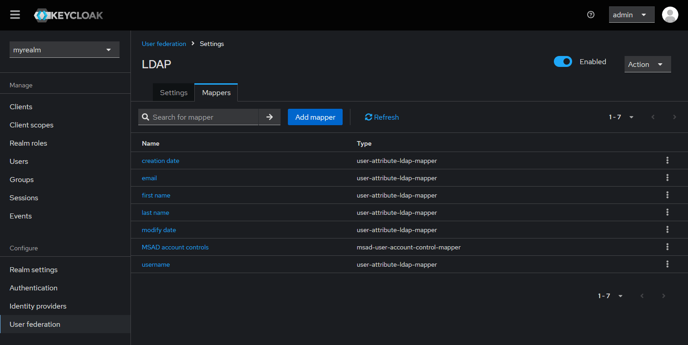
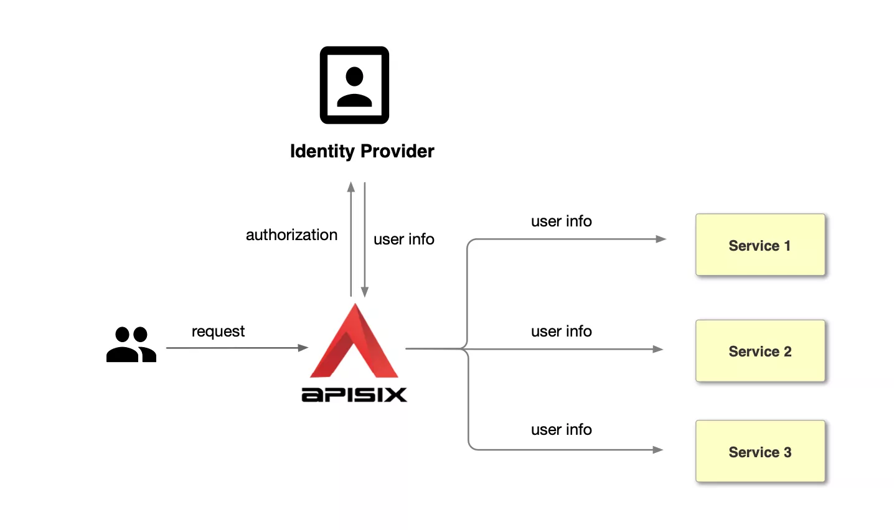
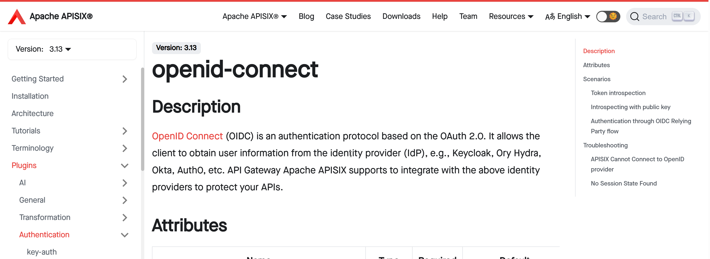

Переложи всё на инфру
Денис Аникин, https://xfenix.ruКто я

- Техлид в AI Platform в Райфе
- Лидер корп. Python Community
- Python, typescript, kubernetes, архитектура
- Выступаю, работаю в ПК
О чём доклад
- Ключевые микросервисные паттерны
- Надёжность
- Как всё сделать дешевле (на инфре)

Shared database
О паттерне
Важные моменты
- Считается анти-паттерном
- Решает задачи
- Иногда можно
И когда же?
- Немного изменений
- Небольшая нагрузка
- Не очень важна устойчивость
Прочие проблемы
- Количество соединений
- + Рестарт
- + Деплой
Как быть с надежностью?
Перейти к…
Database per service
О паттерне
Важные моменты
- База для любой микросервисной архитектуры
- Каждый сервис — своя база
- Всё вроде просто, но…
Получаем данные другого сервиса
Идея не очень
Мы вернулись к shared database
Получаем данные «сервиса B» синхронно
Нюансы REST
- Не текут абстракции
- Контракт стабилен («ну типа»)
- Но всё ли ок?
async def fetch_some_data_from_service_b(httpx_client):
service_b_data = await httpx_client.get("https://service-b/entity")
...
service_b_data["title"] # используем где-то
...
Синхронно + надёжно
| Категория | Что это? | Как достичь? |
|---|---|---|
| Robustness | Плохой ввод не ломает | Pydantic, defensive prog. (100% mypy), ruff |
| Resilience | Восстанавливается после сбоя | Circuit breakers, retries, fallbacks + cache, bulkhead |
| Reliability | Работает стабильно и предсказуемо | Репликация, мониторинг, алерты, auto-restart |
@cachebox.cached(cachebox.TTLCache(0, ttl=30))
@stamina.retry(on=httpx.HTTPError, attempts=3, wait_initial=0.2)
async def really_fetch_data_from_b(...):
return await httpx_client.get("https://service-b/entity")
async def fetch_some_data_from_service_b(...):
...
service_b_data = really_fetch_data_from_b(...)
service_b_data["title"] # используем где-то
...
from aiobreaker import CircuitBreaker
emergency_db_breaker = CircuitBreaker(fail_max=5, reset_timeout=... 60)
@emergency_db_breaker
@cachebox.cached(cachebox.TTLCache(0, ttl=30))
@stamina.retry(on=httpx.HTTPError, attempts=3, wait_initial=0.2)
async def really_fetch_data_from_b(...):
return await httpx_client.get("https://service-b/entity")
async def fetch_some_data_from_service_b(...):
...
service_b_data = really_fetch_data_from_b(...)
service_b_data["title"] # используем где-то
...
И это не всё
Ещё проблемы!
- Большой трафик → завалим другой сервис
- Решение? 2 паттерна
- rate limiter принимающий
- bulkhead исходящий
from aiobreaker import CircuitBreaker
emergency_db_breaker = CircuitBreaker(fail_max=5, reset_timeout=... 60)
bulkhead_for_service_b = asyncio.Semaphore(10)
@emergency_db_breaker
@cachebox.cached(cachebox.TTLCache(0, ttl=30))
@stamina.retry(on=httpx.HTTPError, attempts=3, wait_initial=0.2)
async def really_fetch_data_from_b(...):
async with bulkhead_for_service_b:
return await httpx_client.get("https://service-b/entity")
async def fetch_some_data_from_service_b(...):
...
service_b_data = really_fetch_data_from_b(...)
service_b_data["title"] # используем где-то
...
Синхронно + перекладываем на инфру
Берём service mesh…
Resilience
kind: HTTPRoute
…
metadata:
annotations:
retry.linkerd.io/http: 5xx
retry.linkerd.io/limit: "2"
retry.linkerd.io/timeout: 300ms
spec:
parentRefs:
- name: schlep
kind: Service
…
rules:
- matches:
- path:
type: PathPrefix
value: "/some-service/"
Circuit breaker
kind: Service
metadata:
name: orders
namespace: shop
annotations:
balancer.linkerd.io/failure-accrual: consecutive
balancer.linkerd.io/failure-accrual-consecutive-max-failures: "5"
balancer.linkerd.io/failure-accrual-consecutive-min-penalty: 10s
balancer.linkerd.io/failure-accrual-consecutive-max-penalty: 1m
balancer.linkerd.io/failure-accrual-consecutive-jitter-ratio: "0.5"
spec:
selector:
app: orders
ports:
- protocol: TCP
…
Rate limiter
kind: HTTPLocalRateLimitPolicy
...
spec:
targetRef:
group: policy.linkerd.io
...
total:
requestsPerSecond: 100
identity:
requestsPerSecond: 20
overrides:
- requestsPerSecond: 25
clientRefs:
- kind: ServiceAccount
...
Осталось всего ничего!
- Добавить кеш + fallback
- Семафор (он же bulkhead)
- Ну и топ
Как обычно мы делаем?
Получаем данные «сервиса B» асинхронно
Какой мотив?
- Это надёжно!
- Low latency
async def calculate_in_service_a(cart_items):
attributes = await select_from_database_service_b_data(product_ids)
for item in cart_items:
buffer.append(attributes[item["id"]]["price"])
return await calculate_llm_reccomendations(buffer)
Нюансы MQ
- Триггерится сервис b
- Ловим в сервисе а, делаем реплику
- Но тут есть проблема…
Мы так часто делаем
Асинхронно + перекладываем на инфру
Итак, представим
Магия: CDC

Кода нет!
CQRS

Ура, и тут кода нет!
Transactional Outbox

Проблема транзакционности в EDA


Приходится писать руками

Auth
Авторизация и аутентификация
- Аутентификация — логопас ← штука не уникальная
- Авторизация — проверка токена ← у всех своя



Межсервисная аутентификация
apiVersion: v1
kind: Namespace
metadata:
name: demo
annotations:
linkerd.io/inject: enabled
config.linkerd.io/default-inbound-policy: all-authenticated